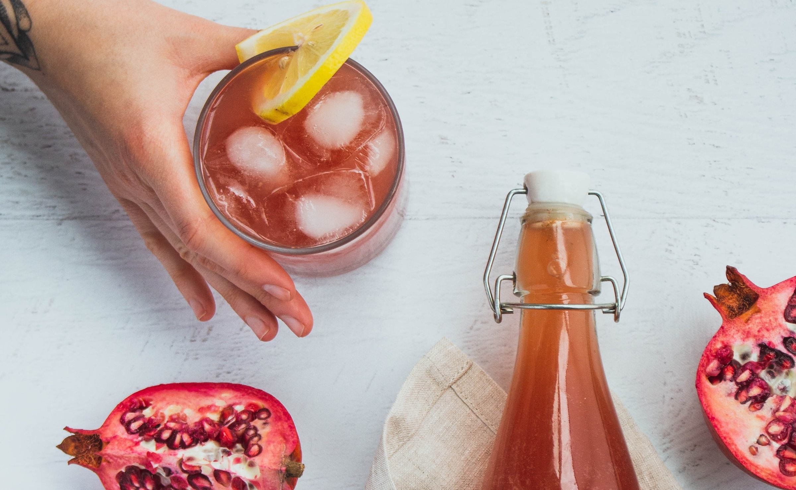

<!doctype html>  
<html>  
    <head>  
        <meta charset="UTF-8">  
        <meta name="viewport" content="width=device-width, initial-scale=1">  
        <meta http-equiv="Cache-Control" content="no-cache, no-store, must-revalidate" />  
        <meta http-equiv="Pragma" content="no-cache" />  
        <meta http-equiv="Expires" content="0" />  
        <link rel="stylesheet" type="text/css" href="11style.css">
        <link rel="stylesheet" href="https://use.typekit.net/brz1fcn.css">
        <title>BurnsBucha Homepage</title>  

    </body>  
</html>

</head>
<body>
<header>
<h1><a href="index.html"></a></h1>
<nav>
    <ul>
    <li><a href="about.html">About</a></li>
    <li><a href="products.html">Products</a></li>
    <li><a href="location.html">Location</a></li>       
    </ul>
</nav>   
</header>
    <h2> BurnsBucha, It's alive!</h2>
    <p class="about">The probiotic microorganisms consume the plant fibers that human bodies cannot digest. This is essential for maintaining a healthy gut biome. At BurnsBooch, we celebrate the harmony of traditional kombucha, craft brewing, and fresh-pressed juice. #livecultured</p>
    <h3>We have the Tea, <a class=underline href="products.html">Place your Order Today!</a></h3>  
      
    <h3>Eat your kombucha, or create your own!</h3>
    <p class="about">Did you know starter tea alone will brew Kombucha! Thats right, starter tea contains all the benficial bacteria you need to brew Kombucha.</p>
    
</div>
</body>
</html>